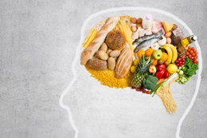

Food for Thought

Good nutrition is a lifestyle, not a diet. It starts with a new way
of thinking about food. Think of your body as a vehicle that uses
food for fuel. Fill your tank with the right type of fuel.
Do not approach your nutrition plan as a diet plan, but rather, a
lifestyle change. If you make a permanent change, you will see big
results. The key to success is a daily focus on your goal.
Portion your meals and track your calories. There are many free
mobile apps available to help track your activity level and
calories.
Control impulsive urges to buy junk food, and instead, allow
yourself to one "cheat" meal a week.
Did you know the average American consumes 3 lbs of sugar each week?
What to Eat

Use the following as a guideline:
- Protein, such as eggs, chicken, and lean red meat
- Vegetables, but avoid corn and peas
- Fruit
- Fat, such as olive oil, nuts, and seeds
Limit the consumption of bread, pasta, white potatoes, and processed
food. These foods are high in carbohydrates.
When you shop for groceries, shop the outside aisles and buy organic
when possible. Stock up on fresh vegetables, almond flour, and flax
seed.
Check out our Meal of the Week for new meal ideas.
Did you know that avacados are a good source of Vitamin B?
Meet of Week

Herb Roasted Chicken
Ingredients:
- boneless, skinless chicken breast (organic preferred)
- 1 tsp Herbes de Provence
- 1 tsp lemon juice
- 1 tsp olive oil
- 1 tsp sea salt
- ¼ tsp pepper
Instructions:
Combine all ingredients in a plastic bag and marinate for at least
an hour. Preheat oven to 350 degrees. Bake chicken for 30-35 minutes
or until juices run clear. Broil on high for two minutes or until
brown. Serve with a fresh side salad.
Did you know the average active adult should consume 2,000 calories
a day?
Copyright ©2025. All Rights Reserved.
likelion.vn@likelion.net